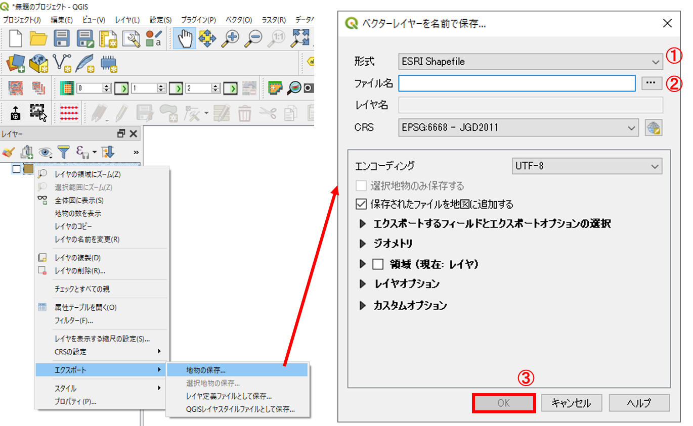
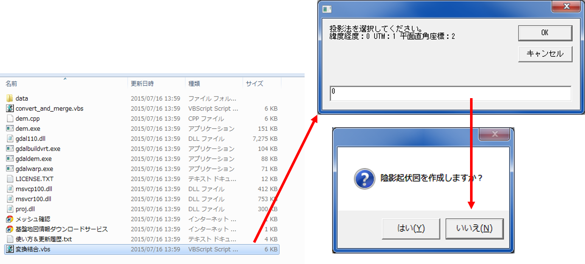
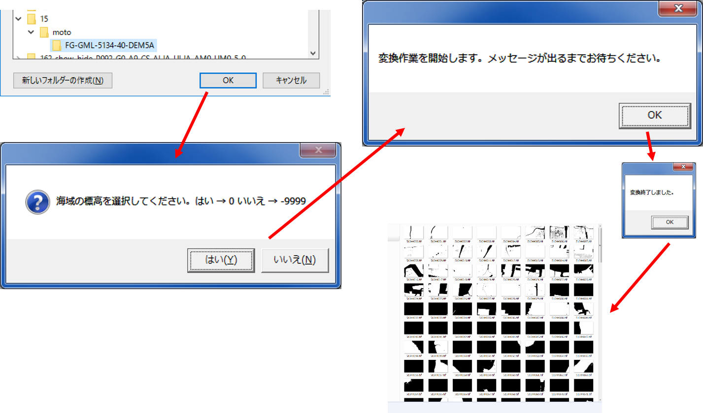

既存データの地図データと属性データ
本教材は、「既存データの地図データと属性データの実習用教材」です。GISのデータは、複数の形式があり、様々な機関が提供しています。本教材では、無償で提供されるGISデータや、そのダウンロード手法について解説しています。
Menu
国土地理院の基盤地図情報
基盤地図情報は、国土交通省国土地理院が整備しているデータです。市町村や2次メッシュ単位で、測量の基準点のほか、行政区画の境界（2500レベル以上）や道路縁（2500レベル以上）等がダウンロードできます。また、地形表現や解析等で用いることのできるDEM（Digital Elevation Model）もダウンロードすることができます。基盤地図情報として提供されているデータは、ダウンロード後に変換が必要です。以下では、基盤地図情報からデータをダウンロードする手法について解説しています。教材に従って任意のファイルを選択し、ダウンロードを試してください。※基盤地図情報の利用については、測量法に従ってください。
アカウントの作成
基盤地図情報ダウンロードサービスにアクセスし、右上にある「ログイン」メニューからログインする。アカウントがない場合は、ログイン画面の所で「新規登録」のリンクがあるので、アカウントの新規登録を行う。
基盤地図情報基本項目：ベクタデータの取得
ログインした状態で、基盤地図情報ダウンロードサービスから基盤地図情報 基本項目のファイル選択へをクリックする。地図をスクロールし、ダウンロードするデータを選択する。ここでは、練習として東京大学本郷キャンパスが含まれる533946を選択し、ダウンロードファイル確認へをクリックする。データが選択できたら、全てチェックをクリックし、まとめてダウンロードをクリックする。変換する範囲が都道府県全体のように大きいと、処理に時間がかかるため、練習では533946の区画のみとする。以下の動画も参考にデータのダウンロードを練習してください。
ダウンロードしたデータの表示とエクスポート
以下では、基盤地図情報基本項目をベクトルデータに変換する手法として、QGISを利用する手法とFGDVを利用する手法を解説します。
QGISでのデータの表示と出力
ダウンロードした.zipを解凍し、以下の手順を実行します。1.xmlをQGISにドラッグアンドドロップする。この際、座標系を指定するウィンドウが立ち上がるため、2.フィルターからJGD2011を検索し、3.OKをクリックする。しばらくするとデータが表示される。上記の手順を繰り返し、ファイル内の.xmlを読み込む。

データが表示されたのを確認し、レイヤーウィンドウのデータの上で右クリックし、エクスポート>地物の保存を選択する。次に、1.ESRI Shapefileを指定し、2.ファイル名と保存場所を設定する。最後に、3.OKをクリックする。

※Shapefileは複数のファイルで出力されるため、出力したファイルを移動する際は、すべて移動するように注意する（.shpのみを移動したために、データが表示できないというミスが多い）。
基盤地図情報数値標高モデル(DEM)：ラスタデータの取得
ログインした状態で、基盤地図情報ダウンロードサービスから基盤地図情報 数値標高モデルのファイル選択へをクリックする。
地図をスクロールし、ダウンロードするデータを選択する（ここでは、例として東京大学本郷キャンパスが含まれる533946を選択し、ダウンロードファイル確認へをクリックする。
データが選択できたら、全てチェックをクリックし、まとめてダウンロードをクリックする。ダウンロード後、Zipファイルを解凍する。
基盤地図情報からダウンロードしたDEMを変換する
基盤地図情報からダウンロードした数値標高モデルをGISソフトウェアで処理するためには、ラスタデータへの変換が必要です。以下では、株式会社エコリスのＨＰのコンバーターを用いた変換について解説しています。株式会社エコリスのＨＰから、標高DEMデータ変換ツールをダウンロードし、DEMtool.zipを解凍する。解凍したファイルを開き、変換結合.vbsを実行する。
- Mac向けのプログラムはない。Macユーザーは、以下のデータ変換の解説を閲覧するのみでかまいません。次の地理院地図の説明に進んでください。
投影法を尋ねるダイアログが出るので、緯度経度を選択するために'0'を入力する。陰影図の作成が必要な場合は、「はい」をクリックする（今回はいいえとした）。 
基盤地図情報からダウンロードしたDEMが入っているフォルダを選択し、海域の標高値を選択する（今回は「はい → 0」を選択した）。変換作業を開始し、完了のメッセージを待つ。変換対象として選んだフォルダー内に、[番号].tifの名前を持つファイル群が出力されているかを確認する。 
ファイルの変換が終了すると、ファイル内にmerge.tifが出力されるため、これをQGISで読み込み、データを確認する（標高に応じて白と黒の濃淡が表現されていることを確認する）。ラスタデータの配色（値に応じた色分け）は、空間データの統合・修正の教材で解説している。
地理院地図
国土地理院が提供するデジタル地図として、地理院地図があります。地理院地図では、2万5千分の1地形図や空中写真等を電子化した電子国土基本図のほか、土地条件図などの主題図を閲覧することができます。地理院地図は、オープンソースとして提供されています。タイルで配信されているデータは、WEB地図やGISソフトウェアで背景地図として利用することができます。
国土交通省の国土数値情報
国土数値情報は、国土交通省が整備しているGISデータで、国土計画の策定や推進のために提供されているものです。ほとんどのデータが、シェープファイルで提供されています。以下では、国土数値情報のサイトから、データをダウンロードする手法について解説をしています。教材に従って任意のファイル（3.地域 学校など）を選択し、ダウンロードを試してください。
国土数値情報のサイトにアクセスする。JPGIS形式もしくは、旧統一フォーマットを選択し、任意の項目にチェックをいれて下段の
選択をクリックする。データの範囲を決めるため、任意の地域にチェックをいれ選択をクリックする。今回は最新版の世界測地系のデータをダウンロードすることとし、該当する項目にチェックをいれ、
選択をクリックする。アンケートに回答し、利用約款を読み
はいをクリックする。ダウンロードをクリックすると、データが保存できる。QGISなどでデータを読み込む場合は、ダウンロード後に.Zip形式のファイルを解凍する必要がある。
以下は、上記の手順を動画にまとめたものです。
その他のデータ
以下は解説を省略したため、関心のある方は、GIS実習オープン教材を参照してください。
この教材の課題ページ_既存データの地図データと属性データへ進む
ライセンスに関する注意事項
本教材で利用しているキャプチャ画像の出典やクレジットについては、その他のライセンスについてよりご確認ください。